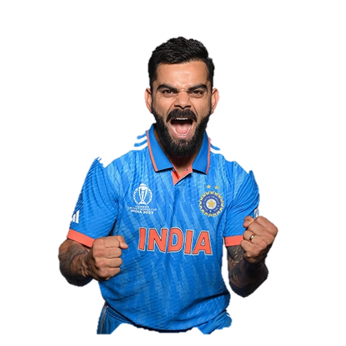

"Self-belief and hardwork will always earn you success."
- Virat Kohli is an Indian international cricketer who currently plays Test cricket and ODI cricket for India.
- Kohli is a former T20I player and a former captain of the Indian national cricket team. He is a right-handed batsman and an occasional unorthodox right arm quick bowler.
- He currently represents Royal Challengers Bangaluru in the IPL and Delhi in domestic cricket.
- He holds the record as the highest run-scorer in IPL, ranks third in T20I, third in ODI, and stands as the fourth-highest in international cricket.
- Batting Prowess
- Holds the record for most ODI centuries (50) and most runs scored in a single edition of a World Cup (ODI).
- First player to score 20,000 runs in a decade across all formats.
- for his aggressive batting style and remarkable consistency.
-
Leadership
- India to multiple victories including the 2024 T20 World Cup and three consecutive ICC Test maces (2017-2019).
- Stepped down as captain after the 2024 T20 World Cup win.
- Accolades
- Won most ICC awards (10) of any player, including four ICC ODI Player of the Year awards.
- Achieved the number one ranking in ICC rankings for all three formats (ODI, T20I, Test)
- Won the prestigious Sir Garfield Sobers Trophy (ICC Cricketer of the Year) twice.